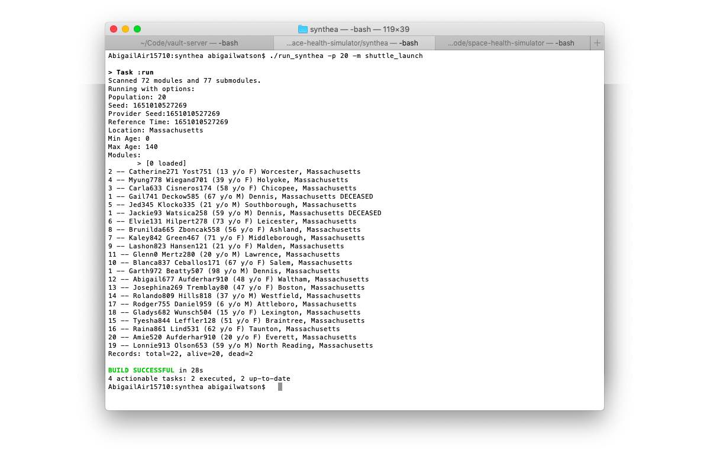

0.3.0 - ci-build
SpaceflightHealthSimulationsReferenceDocumentation - Local Development build (v0.3.0) built by the FHIR (HL7® FHIR® Standard) Build Tools. See the Directory of published versions
In the evolving landscape of simulation technologies, Synthea Synthetic Patient Generation has emerged as a versatile and powerful utility designed to generate realistic synthetic patient data. Originally developed to emulate diverse patient populations for healthcare applications, Synthea offers robust capabilities that parallel those of sophisticated hospital simulators. This alignment not only enhances its utility within medical environments but also opens avenues for innovative applications, such as mission planning for space travel.
Synthea and Hospital Simulators: A Parallel in Simulation Excellence
At its core, Synthea functions similarly to hospital simulators by creating detailed and dynamic representations of patient health records. Hospital simulators are integral in training healthcare professionals, enabling them to practice and refine their skills in a controlled, risk-free environment. These simulators replicate various clinical scenarios, patient responses, and medical workflows to prepare staff for real-world challenges.
Similarly, Synthea generates synthetic patient data that mirrors the complexity and variability found in real populations. By modeling individual health histories, diagnoses, treatments, and outcomes, Synthea provides a comprehensive dataset that can be used for a multitude of purposes, including research, system testing, and educational training. This synthetic approach ensures privacy and scalability, making it an invaluable tool for institutions seeking to analyze and improve healthcare delivery without the constraints associated with real patient data.
Extending Synthea to Space Mission Planning
The application of Synthea extends beyond terrestrial healthcare settings, offering significant potential in the realm of space mission planning. Space travel introduces unique challenges, particularly concerning the health and well-being of astronauts during extended missions. Effective mission planning requires anticipating medical scenarios that may arise in the isolated and resource-constrained environment of space.
By leveraging Synthea’s ability to simulate detailed health profiles and medical events, mission planners can create comprehensive simulations that account for a wide range of health-related contingencies. This includes managing chronic conditions, responding to acute medical emergencies, and understanding the long-term physiological effects of microgravity. Such simulations enable the development of robust medical protocols, the design of necessary medical equipment, and the training of crew members to handle potential health issues autonomously.
Moreover, Synthea’s adaptability allows for the incorporation of space-specific health parameters, such as exposure to cosmic radiation, muscle atrophy, and psychological stressors associated with prolonged isolation. This customization ensures that the simulations are relevant and tailored to the unique demands of space missions, thereby enhancing the preparedness and resilience of astronaut teams.
Running Simulations
Once downloaded and installed, run the following command to generate a cohort of astronauts and simulate a number of shuttle launches.
./run_synthea -p 20 -m shuttle_launch
You should see output like the following.

Depending on the simulation, the output may or may not have fatalities. Of the ~600 astronauts who have prepared to go to space, nearly 30 have died, resulting in a nearly 5% fatality rate. As such, there's a 1 in 20 chance of death. If you do not see any fatalities in the output, rerun the simulation until one is generated. You can then search the output for the term Vehicle accident and find the record of the deceased person.
Space vehicle launch. Mission health objectives: mission risk and flight insurance calculations; modeling of catastrophic failure modes.
git
# this functionality is on a draft branch in an external repo
git clone https://github.com/clinical-meteor/synthea
cd synthea
git checkout -b space-health
./run_synthea -p 20 -m shuttle_launch
Remote patient monitoring of an ICU patient. Mission health objectives: vital sign monitoring in a telehealth environment.
# generate a thousand patients or so,
# and then search for code 410424005
# which is for a wellness encounter
# and will have vital signs
./run_synthea -p 1000
grep -c 410424005 output/*
Smart clothing, fitness trackers, and other devices in a body area network. Mission health objectives: vital sign baselining and monitoring.
git
For physiology simulations, you will need to access the wearables-rebuild branch
git clone https://github.com/synthetichealth/synthea
cd synthea
git checkout -b wearables-rebuild
git pull origin wearables-rebuild
synthea.properties
Then enable the physiology generators in the synthea.properties file.
physiology.generators.enabled = true
physiology.state.enabled = true
run_synthea
And when you generate patients, the patients will have the detailed physiology simulations.
./run_synthea -p 1000
Remote patient monitoring and reported outcomes in a medical home environment. Mission health objectives: vital sign and environmental monitoring.
Commercial space tourism flight, with duration <1 day past Karman line. Mission health objectives: integrate passenger hospital records.
OSHA considerations for astronauts. Mission health objectives: osteoperosis and occular degeneration management.
OSHA considerations for spacewalks. Mission health objectives: vital sign monitoring in microgravity environment.
Artemis space camp for extended stay on the Lunar surface. Mission health objectives: inflatable space habitat with contained atmosphere.
Artemis surveying and prospecting for ice mining and lunar cave habitats. Mission health objectives: radiation exposure management.
Lunar Crater Radio Telescope installation. Mission health objectives: resource maintenance and multi-person surface missions.
Lunar gateway transfer operations. Mission health objectives: space airlocks and closed loop environment transfers.
Lunar ice mining in a crater. Mission health objectives: occupational safety while operating heavy equipment in microgravity.
Lunar biodome construction. Mission health objectives: environmental monitoring, including micrometeorites and solar storms.
Lunar farming and food production. Mission health objectives: calorie production.